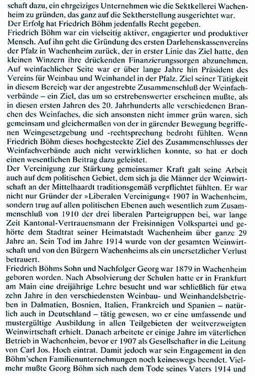
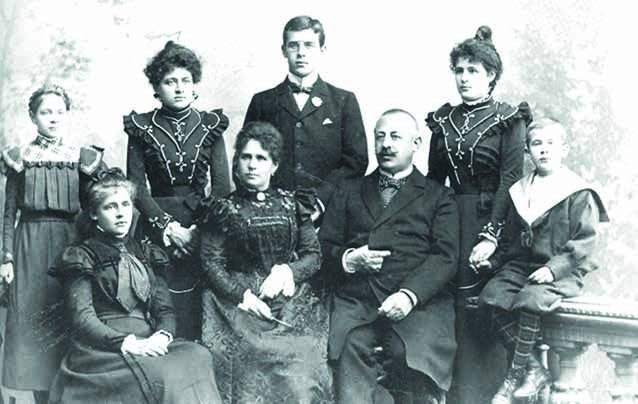
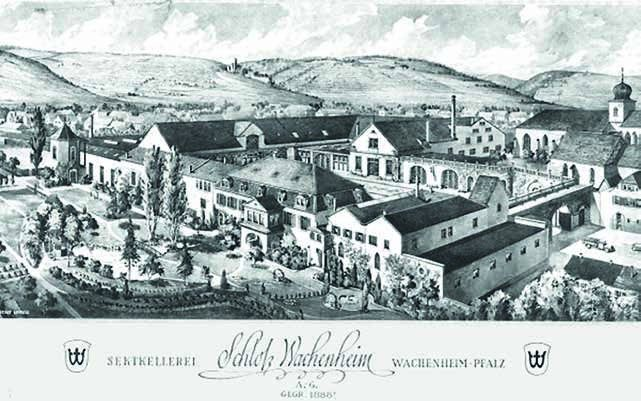
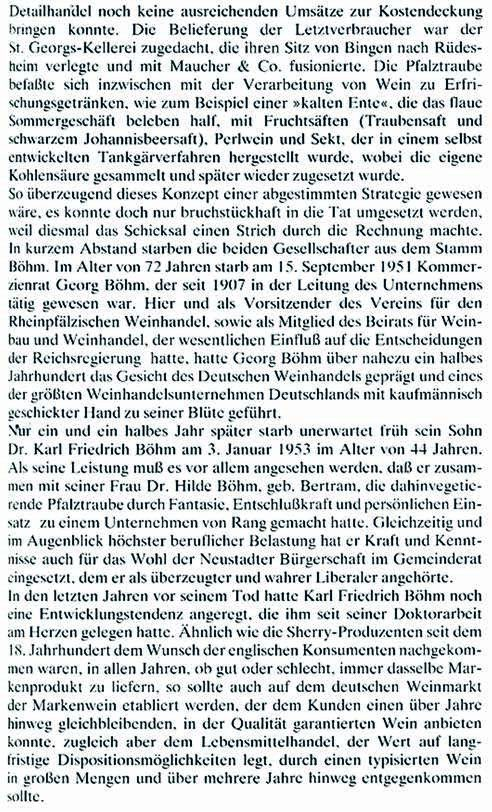

II. Die Geschichte von Friedrich Böhm · Kapitel 9
Georg Böhm, von Raban von der Malsburg, und die Familiengruft
Autor: Rabane von der Malzburg 1978
Die Familiengruft wurde in den 20 oder 30er Jahren von Georg Böhm am Wacheneimer Friedhof erstellt
Es wurden in die Familiegruft verschiedene Vorfahren umgebettet. Darunter Georg Böhm (2.5.1810 – 10.6.1864); Frau T. Böhm geb. Graf (?) (10.6.1864 – 17.X.1071); Maria Lindemann geb Böhm (5. VIII.1841 – 12.5.1915). Die ursprünglichen Grabplatten befinden sic him Vorhof der Gruft. Auch wird Fritz Böhm auf der Grabplatte aufgeführt, obwohl Fotos seines Graben im Frankreich vorliegen.



